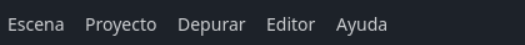
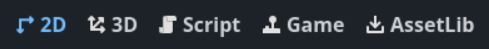
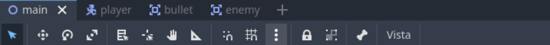
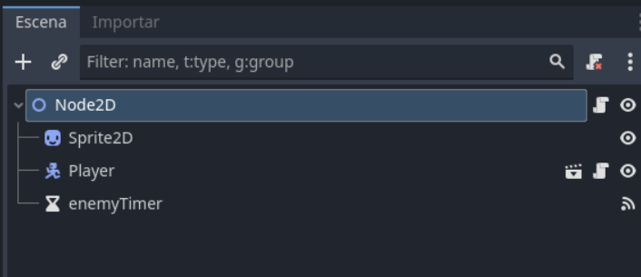
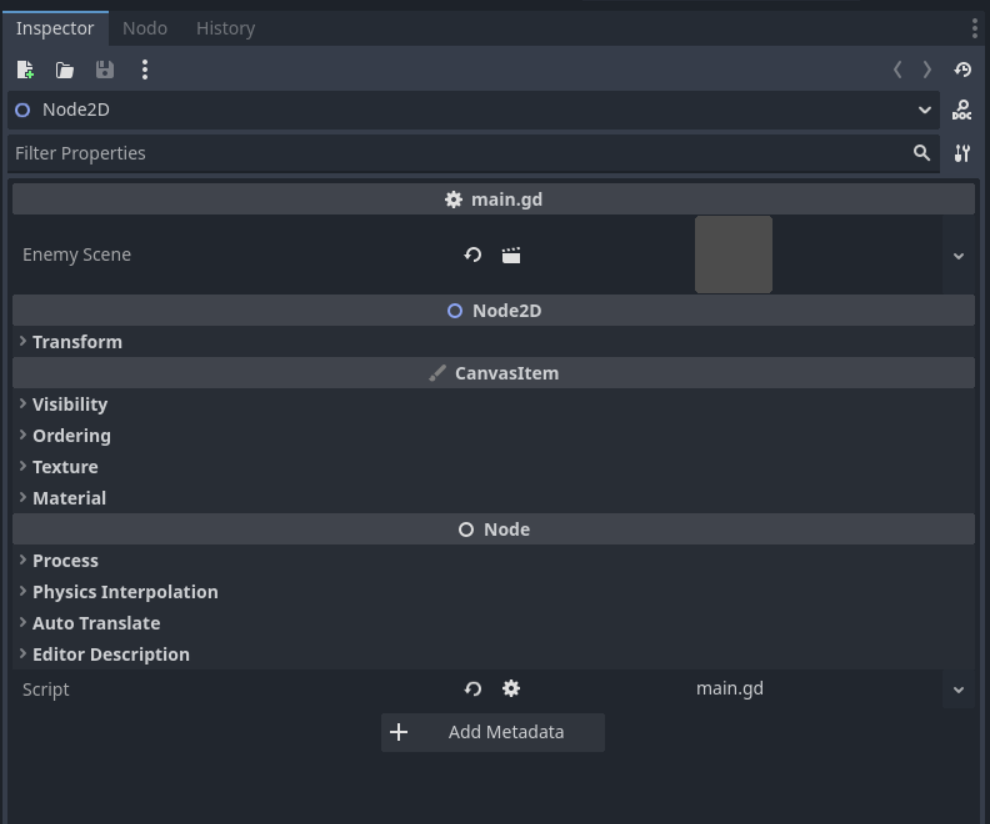
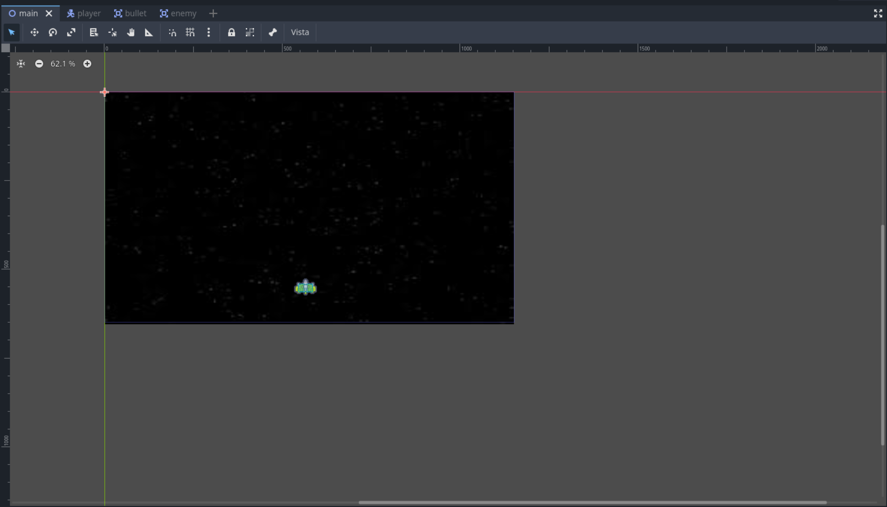
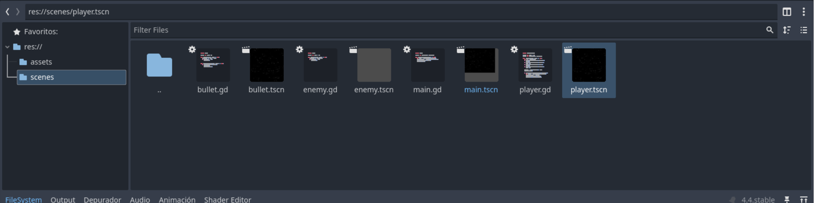
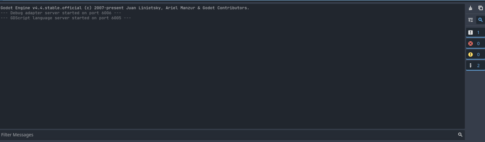

Interfaz de Godot
Elementos básicos de la Interfaz de Usuario de Godot
La interfaz de Godot está compuesta por varios paneles y herramientas que facilitan el desarrollo de videojuegos. A continuación se describen los elementos principales:
1. Barra de Menú Principal
Contiene opciones como Archivo, Editar, Escena, Proyecto y Ayuda. Desde aquí se accede a funciones generales del editor.

1.1 Modos de la Interfaz
Godot ofrece varios modos de trabajo, accesibles desde la parte superior de la interfaz. Cada modo está diseñado para tareas específicas:
- 2D: Permite editar escenas y nodos en dos dimensiones, ideal para juegos y aplicaciones 2D.
- 3D: Proporciona herramientas para trabajar con escenas y objetos tridimensionales.
- Script: Abre el editor de scripts para programar la lógica del juego utilizando GDScript o C#.
- Game: Ejecuta el juego o escena actual para probar su funcionamiento.
- AssetLib: Da acceso a la biblioteca de recursos en línea, donde puedes descargar assets y complementos para tu proyecto.

2. Barra de Herramientas
Permite acceder rápidamente a herramientas como mover, rotar, escalar y reproducir la escena.

3. Árbol de Escena
Muestra la jerarquía de nodos de la escena actual. Aquí puedes seleccionar, organizar y modificar nodos.

4. Inspector
Permite ver y modificar las propiedades del nodo seleccionado.

5. Vista Principal
Es el área central donde se visualiza y edita la escena, tanto en 2D como en 3D.

6. Panel de Recursos
Muestra los archivos y recursos del proyecto, como scripts, imágenes y escenas.

7. Consola de Salida
Muestra mensajes, advertencias y errores generados por el motor o los scripts.
